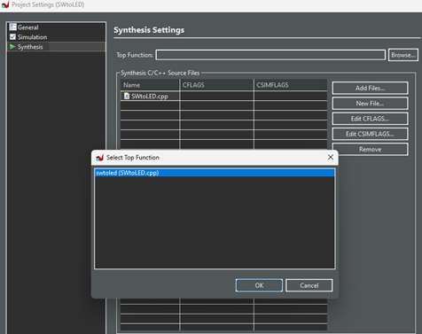

HLS
1. HLS
1.1. ภาพรวม
HLS คือวิธีการพัฒนาลอจิก FPGA ด้วยภาษา C สิ่งที่ออกแบบด้วย HLS สามารถส่งออกเป็น IP และนำไปใช้ใน Vivado ได้

ตัวอย่าง:
ตัวอย่างเช่น มีการคำนวณแบบวนซ้ำ (ภาษา C) ดังต่อไปนี้

เมื่อพิจารณาการคำนวณ Loop ในโค้ด C เป็นแผนภาพบล็อก จะมีลักษณะดังนี้

โดยปกติ เพื่อลดการใช้ลอจิกของ FPGA จะใช้วงจรคูณเพียง 1 ตัวแล้วใช้ซ้ำ

เมื่อแปลงภาษา C เป็น HDL ด้วย HLS โค้ด VHDL ที่ได้จะมีลักษณะดังนี้


และยังสามารถตรวจสอบอัตราการใช้ ลอจิกของ FPGA ได้อีกด้วย

Latency หมายถึง หลังจากเริ่มการคำนวณ ผลลัพธ์จะถูกส่งออกหลังจากผ่านไป xxx ไซเคิล
1.2.การส ร้าง IP ด้วย HLS
หลัง จากสร้างโปรเจกต์ HLS แล้ว ลำดับการทำงานพื้นฐานจะเป็นดังนี้
1．C SIMULATION：การจำลอง ในระดับภาษา C ตรวจสอบด้วย testbench ของ C
2．C SYNTHESIS：แปลงจาก ภาษา C เป็น HDL
3．C/RTL COSIMULATOIN：จำลอง ในระดับ HDL (ตรวจสอบรูปคลื่นสัญญาณเอาต์พุตด้วย Vivado)
4．IMPLEMENTATION：บีบอัด สิ่งที่แปลงเป็น HDL แล้วให้เป็น IP ในรูปแบบไฟล์ zip
‐ ก่อนอื่น ในการสร้างโปรเจกต์ HLS ให้คลิกที่ File → New Project

ตั้ง ค่าตำแหน่งของโปรเจกต์และรุ่นของ FPGA


คลิ กขวาที่ Source เพื่อ Add Source File สำหรับ C Source (ไฟล์ที่ต้องการแปลงเป็น HDL) ในครั้งนี้จะเพิ่มไฟล์ SWtoLED.cpp การทดสอบนี้เป็นการคูณอย่างง่าย โดยจะเตรียมสวิตช์ 2 ตัว (2 บิต) ทำการคูณ แล้วแสดงผลลัพธ์บน LED
คลิ กขวาที่ Test Bench เพื่อ Add Source File สำหรับ Test Bench (C testbench ที่ใช้ในการตรวจสอบ) ในครั้งนี้จะเพิ่มไฟล์ SWtoLED_tb.cpp
ตอนนี้เนื้อหาภายในโปรเจกต์มีลักษณะดังนี้
จากนั้น คลิกที่ Project → Project Settings → Synthesis แล้วเลือก C Source (ไฟล์ที่ต้องการแปลงเป็น HDL) ในครั้งนี้จะเลือก swtoled

‐ ใน Flow Navigator มี 4 เมนู

‐ คลิกที่ C SIMULATION → Run C Simulation เพื่อจำลองในระดับภาษา C โดย Testbench ของ C (SWtoLED_tb.cpp) จะสร้างเงื่อนไขต่างๆ ขึ้นมาเพื่อจำลองการทำงาน

‐ คลิกที่ C SYNTHESIS → Run C Synthesis แล้วกำหนดความถี่สัญญาณนาฬิกา (Period) ที่ต้องการให้ทำงาน

‐ เมื่อเสร็จสิ้น ไฟล์ที่ถูกแปลงเป็น HDL จะแสดงรายงานการใช้ลอจิกของ FPGA และรายงานเวลา (timing report)

เวลา
Uncertainty ดูเหมือนจะเป็นเวลาเผื่อ (margin)
‐ คลิกที่ C/RTL COSIMULATION → Run Cosimulation
Dump Trace：port
ตั้ง ค่า Wave Debug: เปิดใช้งาน

จาก นั้น Vivado จะเปิดขึ้นมาและแสดงรูปคลื่นสัญญาณของการจำลอง

‐ คลิกที่ IMPLEMENTATION → Export RTL
เลือก Export Format เป็น "Vivado IP"

เมื่อ เสร็จสิ้น จะได้ไฟล์ export.zip ซึ่งสามารถนำเข้าไปใน Vivado ในฐานะ IP ได้
※ จริงๆสามารถอ้างอิงโฟลเดอร์ ip ได้โดยตรงโดยไม่จำเป็นต้องใช้ export.zip
1.3. การทดสอบ IP ที่สร้างจาก HLS
- แตกไฟล์ที่ได้จาก HLS (Export.zip) ไปไว้ที่ตำแหน่งที่ต้องการ
‐ ใน IP Catalog ของ Vivado คลิกที่ Add Repository แล้วเพิ่ม IP ที่สร้างจาก HLS
‐ IP ที่เพิ่มเข้ามาจะแสดงที่นี่
‐ เพิ่ม IP ไปยัง Block design ของ Vivado แล้วเชื่อมต่อกับสวิตช์และ LED ภายนอก จากนั้นคอมไพล์ใน Vivado เพื่อสร้าง bitstream

‐ ทดสอบบนอุปกรณ์จริง

|
1*1 = 1 |
1*2=2 |
|
|
|
|
2*2= 4 |
3*2 = 6 |
|
|


1.4. HLS Pragmas
HLS จะแปลงโค้ดภาษา C เป็น HDL แต่รูปแบบในการแปลงจะถูกกำหนดโดย Pragma ซึ่งมีอยู่หลายแบบ สำหรับรายละเอียดโปรดดูที่ Vitis High-Level Synthesis User Guide UG1399 ด้านล่างนี้จะอธิบาย Pragma บางส่วน
Interface
นี่ คือข้อจำกัดของ HLS ที่จะเชื่อมต่ออาร์กิวเมนต์ของฟังก์ชัน C เข้ากับบัส AXI แทนที่จะเป็นสัญญาณธรรมดา เมื่อเพิ่ม pragma ดังต่อไปนี้ อาร์กิวเมนต์ของฟังก์ชันจะถูกรับและส่งผ่านบัส AXI อินเทอร์เฟซ AXI สามารถตั้งค่าเป็น slave, master หรือ stream ได้
มีวิธีการเขียน Interface ได้หลายแบบ ตัวอย่างเช่น หากเพิ่ม Interface เข้าไปใน C Source ที่ใช้ในหัวข้อ "1.2. การสร้าง IP ด้วย HLS" ดังภาพด้านล่าง IP ที่ส่งออกจะมีลักษณะดังนี้ ตำแหน่งแอดเดรสจะถูกกำหนดโดยอัตโนมัติ

ในกรณีที่ไม่ต้องการให้กำหนด ตำแหน่งแอดเดรสโดยอัตโนมัติ สามารถเพิ่ม offset ได้

Pipeline
เมื่อทำการแปลงเป็น HLS จะต้องเลือกว่าจะใช้ pipeline หรือไม่
※ โดยปกติแล้ว HLS น่าจะเลือกใช้ pipeline เป็นค่าเริ่มต้น
ตัวอย่าง:
|
กรณีใช้ Pipeline |
กรณีไม่ใช้ Pipeline |
|
pipeline |
อัตราการใช้ลอจิก FPGA |
|
มี |
|
|
ไม่มี |
|
ในกรณีที่ไม่มี Pipeline การคำนวณ output = input * input จะใช้เวลา 8 สัญญาณนาฬิกา ดังนั้นหากวนลูป 64 ครั้ง การคำนวณนี้จะให้ผลลัพธ์หลังจาก 64*8 = 512 สัญญาณนาฬิกา แต่ถ้าใช้ pipeline ผลลัพธ์จะออกมาเร็วกว่า แต่จะใช้อัตราการใช้ลอจิกของ FPGA เพิ่มขึ้นเล็กน้อย
Unroll
นี่คือข้อจำกัดในการทำให้วงจร คำนวณทำงานแบบขนาน (Parallel) เมื่อแปลงวงจร Loop เป็น HDL

ตัวอย่าง:
|
กรณีไม่ใช้ Unroll |
กรณีใช้ Unroll |
|
|

|
Unroll |
อัตราการใช้ลอจิก FPGA |
|
ไม่มี |
|
|
Factor=2 |
|
|
Factor=4 |
|
|
Factor=8 |
|
|
อัตโนมัติ |
|
Unroll จะกำหนดจำนวนวงจรที่จะทำงานแบบขนานตามค่าของ Factor ตัวอย่างเช่น ถ้า Factor=2 จะมีการเตรียมวงจรคูณ 2 วงจรเพื่อทำการคำนวณ จากผลลัพธ์จะเห็นว่าให้ผลลัพธ์เร็วกว่าการไม่ใช้ unroll (แน่นอนว่าอัตราการใช้ลอจิกของ FPGA ก็จะเพิ่มขึ้นด้วย)
Dataflow
กำหนดวิธีการประมวลผลเมื่อมีการ ส่งข้อมูลระหว่างโมดูล หากไม่มี Dataflow การคำนวณถัดไปจะเริ่มหลังจากที่ผลลัพธ์ทั้งหมดของแต่ละโมดูลออกมาก่อน แต่ถ้าใช้ Dataflow การคำนวณถัดไปจะเริ่มทันทีที่ผลลัพธ์บางส่วนของโมดูลแรกออกมา

ตัวอย่าง:
|
กรณีไม่ใช้ dataflow |
กรณีใช้ dataflow |
|
dataflow |
อัตราการใช้ลอจิก FPGA |
|
ไม่มี |
|
|
มี |
|


เมื่อใช้ Dataflow เวลาในการคำนวณจะลดลงจาก 1539 CLK เป็น 513 CLK (แน่นอนว่าอัตราการใช้ลอจิกของ FPGA จะเพิ่มขึ้น)
1.5. เงื่อนไขการใช้งาน
ใน Vitis High-Level Synthesis User Guide มีหัวข้อ Unsupported C/C++ Constructs อยู่ โดยมีรายละเอียดโดยสรุปดังนี้